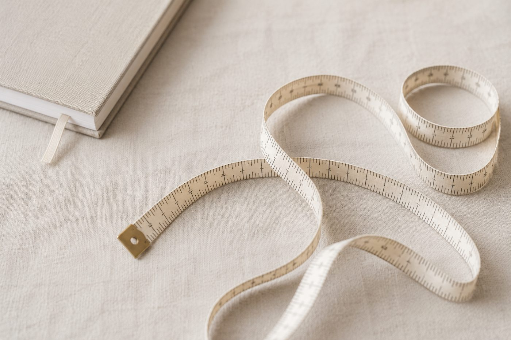

ORDER
痩せるのを待つと、
何も始まらない。
「痩せてからドレスを選びます」「痩せてから試着します」。この順番だと、たいてい間に合いません。順番が逆だからです。

先に結論です。先に試着して、そこから逆算してください。ドレスの形が決まらないと、どこを準備すべきかも決まりません。全身を鍛える必要はなく、当日見えるのは限られた部位だけです。
なぜこの順番だと失敗するのか
| よくある流れ | 起きること |
|---|---|
| 痩せてから試着しよう | 試着が遅れ、選べる在庫が減ります |
| 落ちたサイズで選ぼう | 落ちなかった場合に着られません |
| 全身を鍛えてから | 隠れる部位に時間を使ってしまいます |
| 体重が目標に届くまで待つ | 肌と髪の準備が後回しになります |
先に試着する利点
形が決まると、やらなくていいことが決まります。これが最も大きい。
Aラインなら下半身は隠れるので、脚のトレーニングは不要です。袖のあるデザインなら二の腕の優先度が下がります。逆にマーメイドなら腰から下が主戦場になります。
つまり試着は「選ぶ場」であると同時に、準備の設計図を作る場です。ここを後回しにすると、当てもなく全身に手を出すことになります。
形ごとの優先順位はシルエット別の準備にまとめています。
サイズは今の体型で選ぶ
「この後3kg落とすので、小さいサイズで」という選び方は避けてください。落ちなかった場合に着られません。ドレスは詰められますが、出せる範囲は限られます。
加えて、痩せると胸から落ちます。ビスチェタイプは上半身が薄くなると合わせが余り、形が崩れます。数字を追った結果ドレスが合わなくなるのは、よくある失敗です。
最終フィッティングの日程を確認して、その日の体型で確定すると考えてください。
体重より先に動くもの
痩せるのを待つ間にも、変えられるものがあります。しかもこちらのほうが写真に出ます。
- 姿勢。即日で変わります。首の長さとデコルテの見え方が変わります
- むくみ。数日で動きます。輪郭がはっきりします
- 肌の状態。睡眠と保湿で1〜2週間。写真の質感に直結します
- 髪。伸びるのに時間がかかるので、早く着手するほど選択肢が増えます
それでも落としたい場合
落とすこと自体は問題ありません。ただし削る方向ではなく整える方向にしてください。極端に減らすと顔と肌から先に落ちて、写真は悪くなります。
順番をまとめると
| 順番 | やること |
|---|---|
| 1 | 試着してドレスの形を決める |
| 2 | 出る部位を写真で確認する |
| 3 | その部位だけ対策する |
| 4 | 並行して姿勢・睡眠・肌を整える |
| 5 | 最終フィッティングの日を目標に置く |
次に読む